## Get Started
git clone "https://github.com/saurabhkumar23/Awesome-Bots.git"cd Awesome-Botsnpm install
## Cleanup
$cleanup
## Code Companion
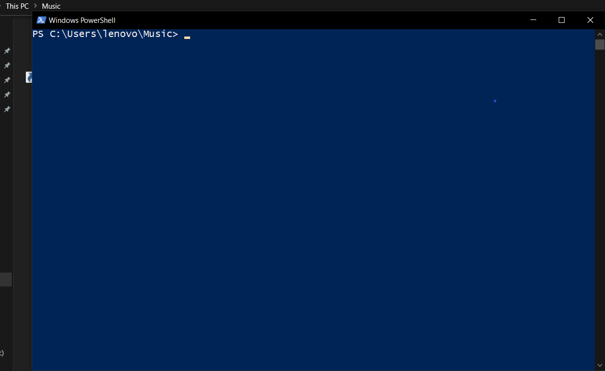
$getTestCases
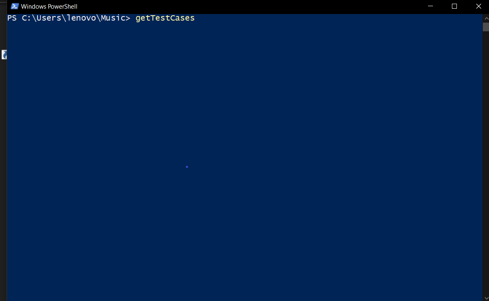
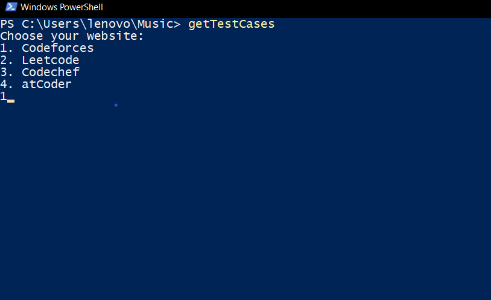
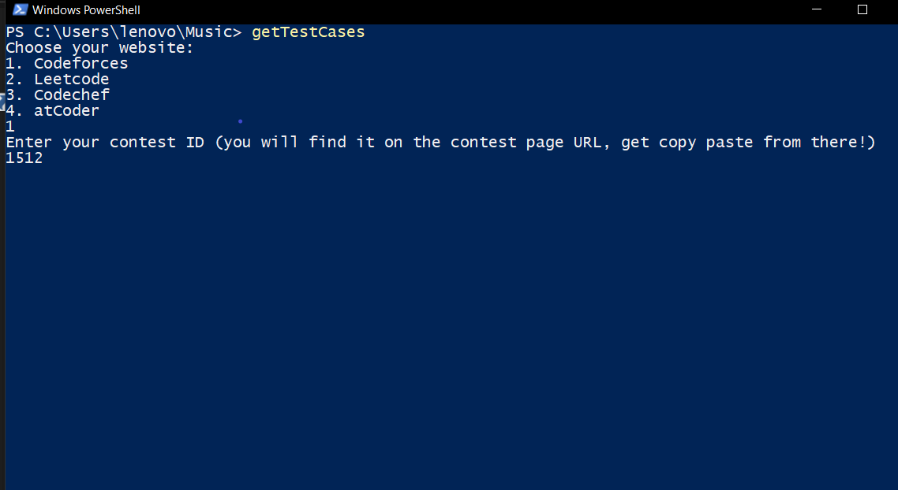
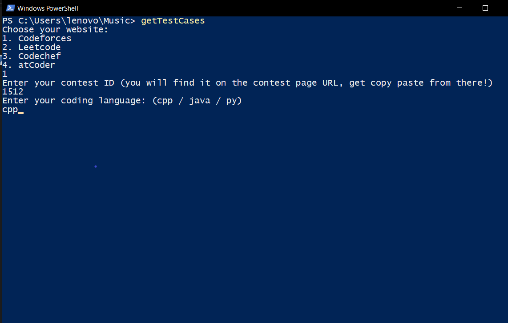
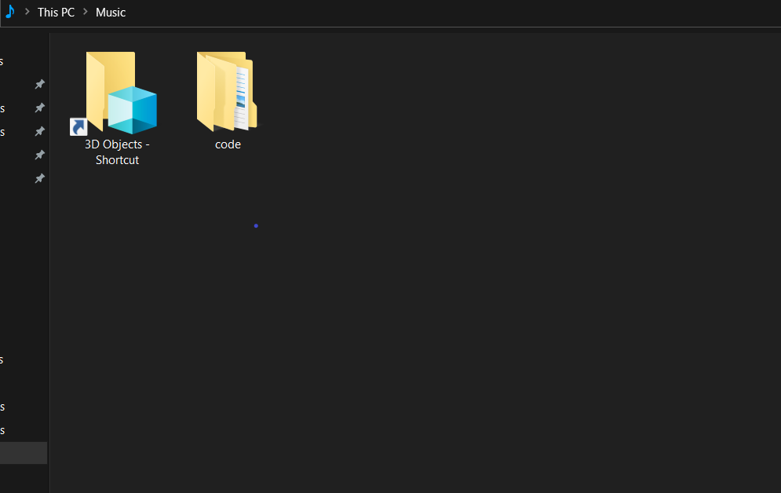
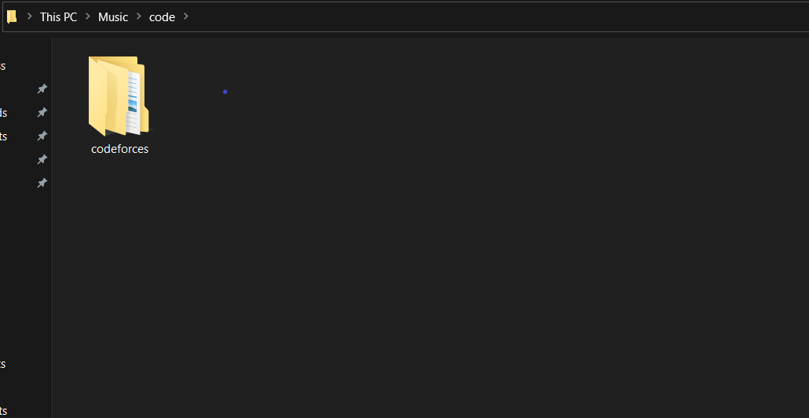
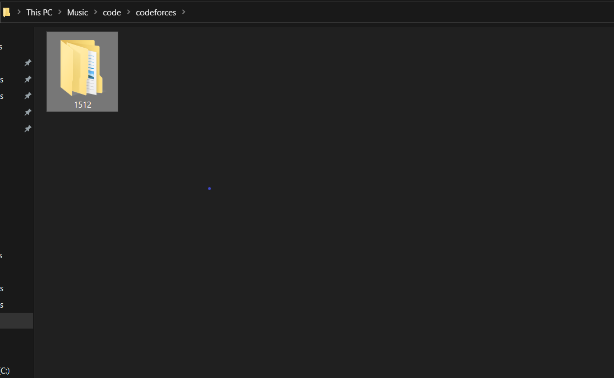

- input.txt : containing problem inputs.
- output.txt : containing problem outputs.
- our source code file
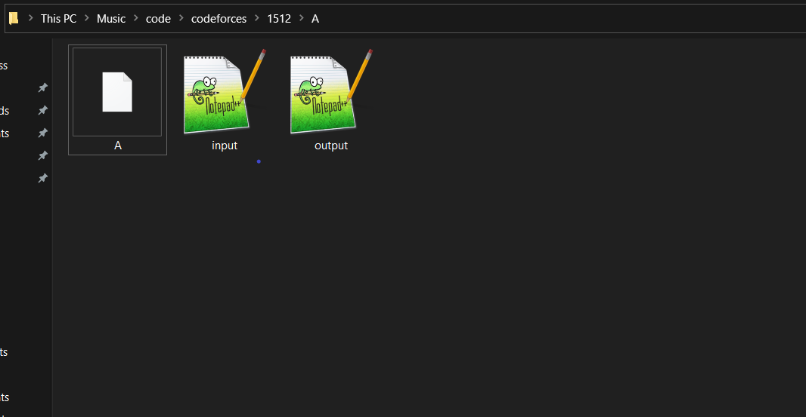
## Spotify Playlist Manager
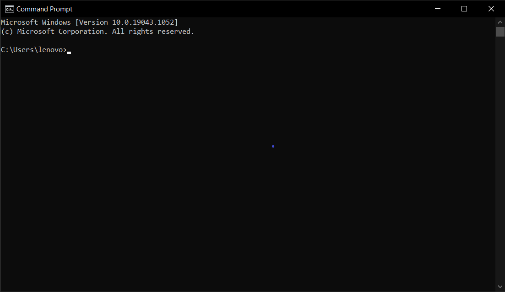
$spotifyManage
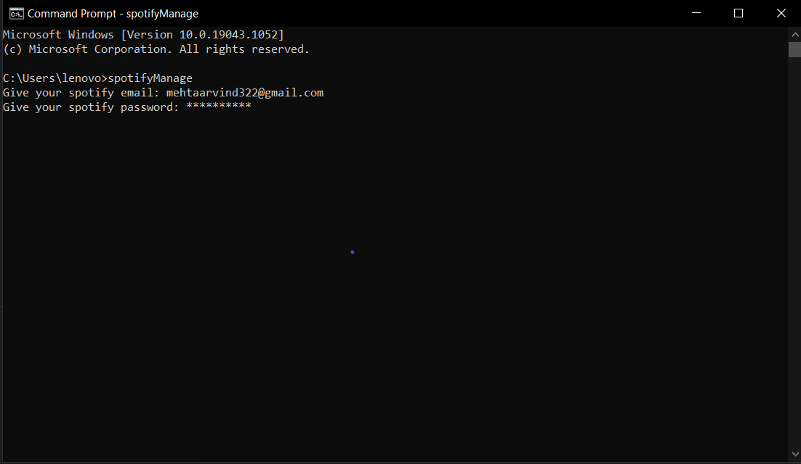
- Create Playlist : Add songs to your new Playlist.
- Modify any Playlist : Add/Remove songs from that Playlist.

## Youtube Playlist Analyzer
- no of videos of the playlist.
- length of the playlist.
- length of playlist when covered in different speed formats : 1.25x, 5x, 1.75x and 2x.
- playlist content in tabular form.
$ytpAnalyzer